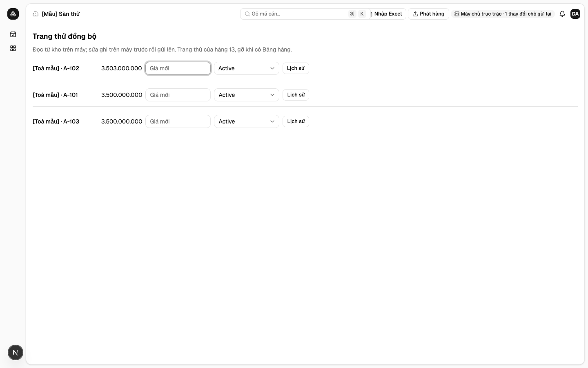
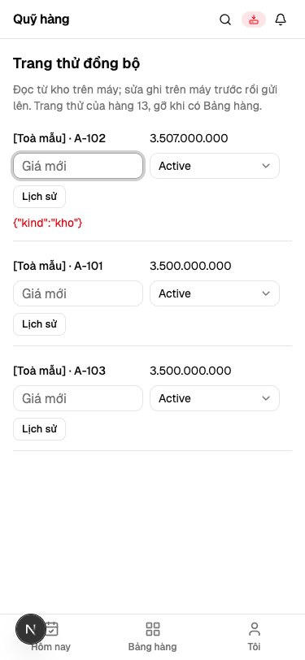
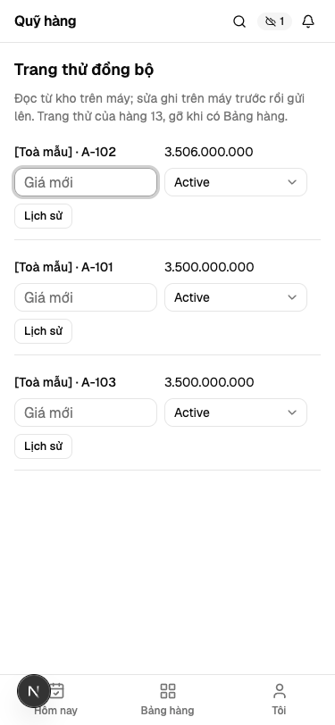
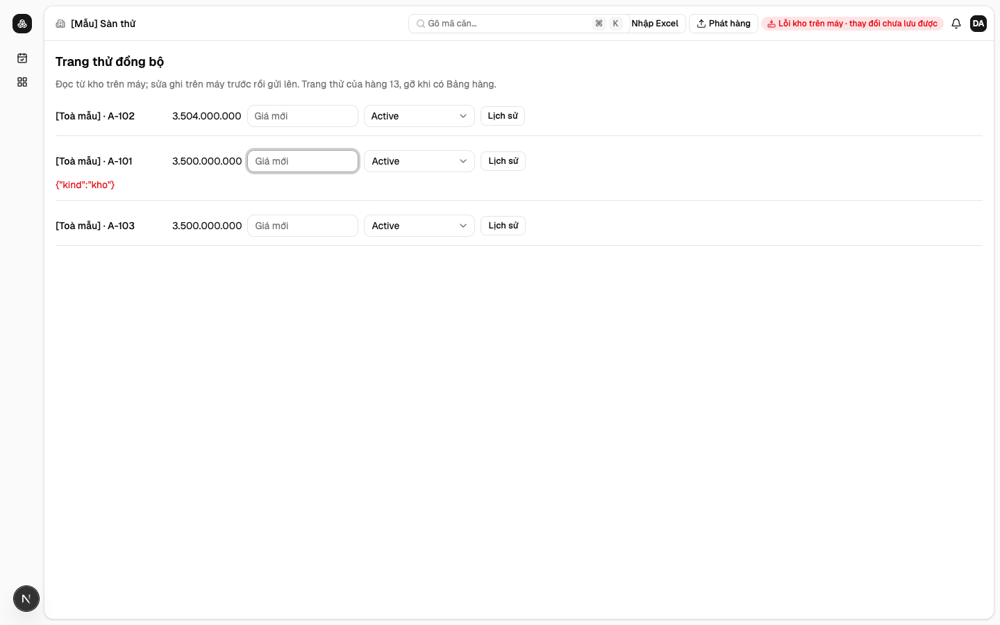
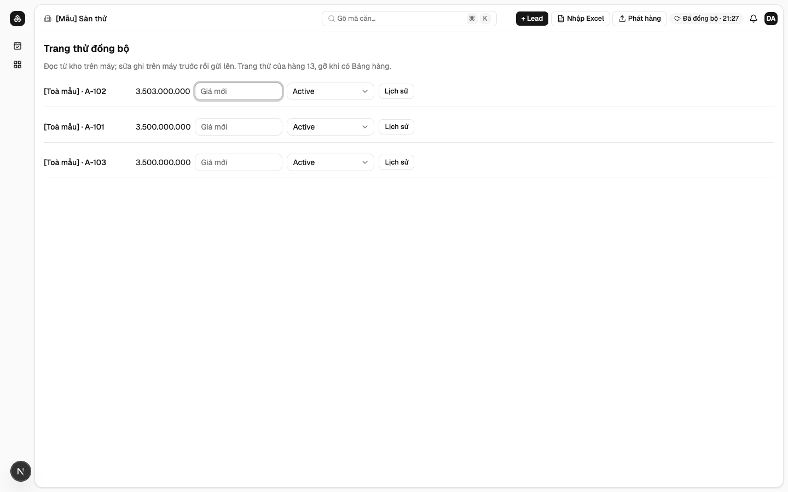
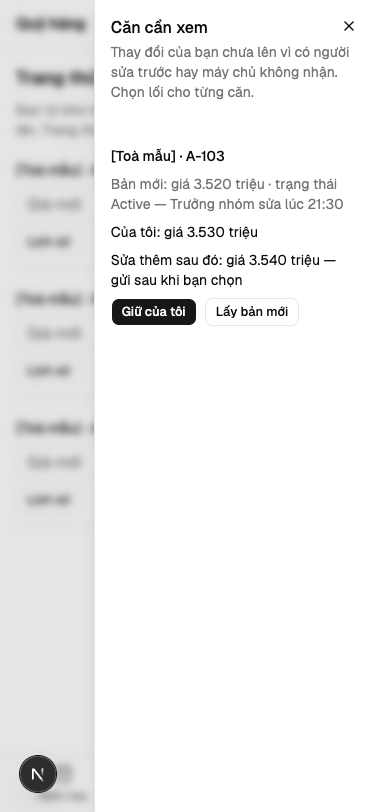

Đầu chủ sửa căn lúc máy chủ trục trặc ngắn hay hết phiên thì thay đổi tự gửi lại khi máy chủ trả lời được, chỉ báo đồng bộ nói đúng vì sao chưa gửi, và căn đang ở Cần xem sửa tiếp hay xử lý không kẹt, không đảo thứ tự hai lần sửa
Vì sao làm
Ba hành vi chủ kho chọn «mở hợp đồng mới» ở Cổng Bằng chứng hàng 13 (Ngoài-3/13/25, Ngoài-4, Ngoài-6/16): không mất dữ liệu ngầm nhưng người dùng phải xử lý tay việc lẽ ra tự lành, hoặc bị chỉ báo nói sai; phải xong trước hai tuần thử Số đo hai tuần thử gần nhất (Tham chiếu §11): Số lần mất mạng và thao tác lúc mất mạng trên điện thoại — ngưỡng số đặt trước khi thử.
Đã hứa
- AC-1 — Given hai căn H và K có thao tác chờ (H hai lần sửa giá, K một lần), máy chủ trả 503 cho mọi lần gửi của H và 200
- AC-2 — Given ba thao tác chờ trên hai căn, máy chủ trả 401 cho mọi lời gọi, When bộ đồng bộ gửi và kéo, Then cả ba ở lại
- AC-3 — Given máy chủ trả 409 cho lần gửi, rồi trả 401 hay 503 cho lần đọc lịch sử căn để đối chiếu, When bộ đồng bộ gửi,
- AC-4 — Given thao tác chờ trên căn, máy chủ trả 400 (chuyển trạng thái lõi cấm), 403 (căn còn đọc được, thân lỗi mang
- AC-5 — Given bộ đồng bộ đã kéo về một lần, When lần kéo kế gặp lần lượt: mất mạng, 401, 503, bản kéo mang khoá nguồn bị
- AC-6 — Given kho trên máy ném lỗi khi ghi, When người sửa một căn, Then lần sửa trả về lỗi loại «kho» và chỉ báo hiện
- AC-7 — Given căn H đang Cần xem «đụng nhau» với thao tác cũ của tôi (giá 2 tỷ) trên bản máy chủ mới, When tôi sửa tiếp
- AC-8 — Given căn đang Cần xem (loại đụng nhau, hay loại máy chủ bác vì luật lõi) và tôi đã sửa tiếp nó, When tôi bấm «Lấy bản mới», «Bỏ thay đổi»
- AC-9 — Given ứng dụng chạy trên máy chủ dev với dữ liệu mẫu, When người dùng sửa giá lúc API trả 503, lúc phiên hết
Thiết kế
docs/superpowers/specs/2026-10-31-dong-bo-tu-lanh-design.md
Quyết định
- 2026-10-31 · Máy · approach · S1 — Đã tra tri thức: Đầu chủ sửa căn lúc máy chủ trục trặc ngắn hay hết phiên thì thay đổi tự gửi lại khi máy chủ trả lời được, chỉ báo đồng bộ nói đúng vì sao chưa gửi, và căn đang ở Cần xem sửa tiếp hay xử lý không kẹt, không đảo thứ tự hai lần sửaKho đã khai tri_thuc — bước thiết kế tra trang trước khi chọn.
- 2026-10-31 · Máy · approach · S1 — 401 và 5xx giữ thao tác trong hàng đợi và tự gửi lại; mọi 4xx khác vẫn đối chiếu rồi vào Cần xem như hàng 13.Câu bật khi của hàng 61 nói đúng ranh giới này, và luật đợt 21 cấm đổi luật Cần xem với 4xx thật.
- 2026-10-31 · Máy · approach · S1 — 401 dừng cả lô gửi; 5xx chỉ dừng chuỗi của căn trả 5xx, căn khác gửi tiếp.Hàng 13 đã chốt một căn kẹt không chặn căn khác; 401 thì mọi lời gọi sau cũng 401 nên gửi tiếp chỉ phí lời gọi.
- 2026-10-31 · Máy · approach · S1 — Sửa tiếp căn đang Cần xem: thao tác mới được giữ tới khi người chọn lối; Giữ của tôi gửi cũ rồi mới, ba lối còn lại bỏ cũ và gửi mới — giá cuối luôn là lần sửa sau cùng.Câu bật khi đòi giá cuối là lần sửa sau cùng cho cả ba lối; bỏ luôn thao tác mới ở Lấy bản mới thì trái câu ấy.
- 2026-10-31 · Máy · approach · S1 — Chỉ báo tách năm nguyên nhân bằng chữ: Mất mạng, Hết phiên (liên kết đăng nhập lại), Máy chủ trục trặc, Bản tải về bị từ chối, Lỗi kho trên máy; Cần xem vẫn đứng đầu.Câu bật khi kê bốn nguyên nhân phải phân biệt, câu giao nói máy chủ trục trặc ngắn; Cần xem đứng đầu là luật chỉ báo của hàng 13.
- 2026-10-31 · Máy · descope · S1 — bỏ design-pass — giao diện chỉ đổi chữ chỉ báo, một liên kết và một dòng trong bảng Cần xem trên khối đã duyệt ở hàng 13; E9b chụp từng trạng thái ở S4Không màn mới, không khối mới; khuôn của hàng 13 đã duyệt trên bản bấm được.
- 2026-10-31 · Máy · descope · S1 — bỏ design-pass — giao diện chỉ chuyển thể khối đã duyệt ở hàng 13 (chữ chỉ báo, biểu tượng lucide đã nêu tên trong đặc tả UX, Link cho «Hết phiên», một dòng trong Sheet Cần xem); E9b chụp ma trận năm trạng thái ở khổ 375 và 1440 ở S4Luật giao diện của kho coi chuyển thể là đổi dữ liệu, chữ và prop trên khối đã chọn — không có lựa chọn thị giác mới để người nhìn trước; giá phải trả: chủ kho thấy ảnh lần đầu ở Cổng Bằng chứng.
- 2026-10-31 · Người · seal · gate1 —
- 2026-10-31 · Máy · revisit · gate2 — Ngoài-1: ghi Known limitsmáy tự định tuyến theo đề xuất S4 «known-limits» — kho bật feature_loop.ngoai_n_tu_dinh_tuyen
- 2026-10-31 · Máy · revisit · gate2 — Ngoài-2: chấp nhận, không sửamáy tự định tuyến theo đề xuất S4 «wont-fix» — kho bật feature_loop.ngoai_n_tu_dinh_tuyen
- 2026-10-31 · Máy · revisit · gate2 — Ngoài-3: ghi Known limitsmáy tự định tuyến theo đề xuất S4 «known-limits» — kho bật feature_loop.ngoai_n_tu_dinh_tuyen
Bằng chứng
Các eval
| Eval | Tiêu chí | Loại | Verdict | run_id | verified_at |
|---|---|---|---|---|---|
| E1 | AC-1 | test | PASS | minted-dong-bo-tu-lanh-E1-r1 | 2026-10-31T14:23:15Z |
| E2 | AC-2 | test | PASS | minted-dong-bo-tu-lanh-E2-r1 | 2026-10-31T14:23:15Z |
| E3 | AC-3 | test | PASS | minted-dong-bo-tu-lanh-E3-r1 | 2026-10-31T14:23:15Z |
| E4 | AC-4 | test | PASS | minted-dong-bo-tu-lanh-E4-r1 | 2026-10-31T14:23:15Z |
| E5 | AC-5 | test | PASS | minted-dong-bo-tu-lanh-E5-r1 | 2026-10-31T14:23:15Z |
| E6 | AC-6 | test | PASS | minted-dong-bo-tu-lanh-E6-r1 | 2026-10-31T14:23:15Z |
| E7 | AC-7 | test | PASS | minted-dong-bo-tu-lanh-E7-r1 | 2026-10-31T14:23:15Z |
| E7b | AC-7 | test | PASS | minted-dong-bo-tu-lanh-E7b-r1 | 2026-10-31T14:23:15Z |
| E8 | AC-8 | test | PASS | minted-dong-bo-tu-lanh-E8-r1 | 2026-10-31T14:23:15Z |
| E9 | AC-9 | test | PASS | minted-dong-bo-tu-lanh-E9-r1 | 2026-10-31T14:23:15Z |
| E9b | AC-9 | ui-check | PASS | E9b-20261031 | 2026-10-31T14:23:15Z |
| E10 | AC-9 | script | PASS | minted-dong-bo-tu-lanh-E10-r1 | 2026-10-31T14:23:15Z |
Chi tiết từng eval
PASS E1 · test
AC-1: Given hai căn H và K có thao tác chờ (H hai lần sửa giá, K một lần), máy chủ trả 503 cho mọi lần gửi của H và 200
npm test -w @quy-hang/web ℹ duration_ms 127.179459
PASS E2 · test
AC-2: Given ba thao tác chờ trên hai căn, máy chủ trả 401 cho mọi lời gọi, When bộ đồng bộ gửi và kéo, Then cả ba ở lại
npm test -w @quy-hang/web ℹ duration_ms 127.179459
PASS E3 · test
AC-3: Given máy chủ trả 409 cho lần gửi, rồi trả 401 hay 503 cho lần đọc lịch sử căn để đối chiếu, When bộ đồng bộ gửi,
npm test -w @quy-hang/web ℹ duration_ms 127.179459
PASS E4 · test
AC-4: Given thao tác chờ trên căn, máy chủ trả 400 (chuyển trạng thái lõi cấm), 403 (căn còn đọc được, thân lỗi mang
npm test -w @quy-hang/web ℹ duration_ms 127.179459
PASS E5 · test
AC-5: Given bộ đồng bộ đã kéo về một lần, When lần kéo kế gặp lần lượt: mất mạng, 401, 503, bản kéo mang khoá nguồn bị
npm test -w @quy-hang/web ℹ duration_ms 127.179459
PASS E6 · test
AC-6: Given kho trên máy ném lỗi khi ghi, When người sửa một căn, Then lần sửa trả về lỗi loại «kho» và chỉ báo hiện
npm test -w @quy-hang/web ℹ duration_ms 127.179459
PASS E7 · test
AC-7: Given căn H đang Cần xem «đụng nhau» với thao tác cũ của tôi (giá 2 tỷ) trên bản máy chủ mới, When tôi sửa tiếp
npm test -w @quy-hang/web ℹ duration_ms 127.179459
PASS E7b · test
AC-7: Given căn H đang Cần xem «đụng nhau» với thao tác cũ của tôi (giá 2 tỷ) trên bản máy chủ mới, When tôi sửa tiếp
npm run test:db -w @quy-hang/web ℹ duration_ms 1575.401041
PASS E8 · test
AC-8: Given căn đang Cần xem (loại đụng nhau, hay loại máy chủ bác vì luật lõi) và tôi đã sửa tiếp nó, When tôi bấm «Lấy bản mới», «Bỏ thay đổi»
npm test -w @quy-hang/web ℹ duration_ms 127.179459
PASS E9 · test
AC-9: Given ứng dụng chạy trên máy chủ dev với dữ liệu mẫu, When người dùng sửa giá lúc API trả 503, lúc phiên hết
npm run test:db -w @quy-hang/web ℹ duration_ms 1575.401041
PASS E9b · ui-check
AC-9: Given ứng dụng chạy trên máy chủ dev với dữ liệu mẫu, When người dùng sửa giá lúc API trả 503, lúc phiên hết










PASS E10 · script
AC-9: Given ứng dụng chạy trên máy chủ dev với dữ liệu mẫu, When người dùng sửa giá lúc API trả 503, lúc phiên hết
design-floor-s4: sàn M1 đạt trên apps/web/src/components/sync/*.tsx
Eval không phân biệt (Analyst)
Vòng verify
- Round 1: mọi eval PASS; không có eval hỏng. Không có hội đồng chấm (judge) nào cho hợp đồng này.
Tài nguyên
| Khối | Tác tử | Token đầu ra |
|---|---|---|
| S4 round 1 | 18 | 67.330 |
1 lượt chấm · tổng 67.330 token
Giới hạn và ngoài hợp đồng
- Trần số lần thử, lùi dần khi một căn trả 5xx mãi (căn nằm lại hàng đợi, chỉ báo nói «Máy chủ trục trặc»).
- Chuyển các mục Cần xem đã sinh bởi 5xx/401 ở bản cũ về hàng đợi.
- 408 và 429: xếp vào «4xx khác» theo câu chữ của hàng.
- Kênh thời gian thực; mở app khi mất mạng hẳn (như hàng 13).
Giao
chưa ghi quan sát production
Giá trị
- Câu hỏi phép đo trả lời: [đề xuất] đã đạt «Máy chủ giả trả 5xx hay 401 rồi hồi: thao tác ở lại hàng đợi và lên máy chủ đúng thứ tự, không căn nào vào Cần xem; 4xx khác vẫn vào Cần xem như cũ; chỉ báo phân biệt mất mạng, hết phiên, bị từ chối và lỗi kho trên máy; sửa căn đang Cần xem rồi «Giữ của tôi», «Lấy bản mới» hay «Bỏ thay đổi» không để thao tác kẹt và giá cuối là lần sửa sau cùng» chưa? — chưa đo
- Kết quả nào là SỐNG: [đề xuất] Máy chủ giả trả 5xx hay 401 rồi hồi: thao tác ở lại hàng đợi và lên máy chủ đúng thứ tự, không căn nào vào Cần xem; 4xx khác vẫn vào Cần xem như cũ; chỉ báo phân biệt mất mạng, hết phiên, bị từ chối và lỗi kho trên máy; sửa căn đang Cần xem rồi «Giữ của tôi», «Lấy bản mới» hay «Bỏ thay đổi» không để thao tác kẹt và giá cuối là lần sửa sau cùng — chưa đo
- Kết quả nào là CHẾT: [đề xuất] chưa đạt «Máy chủ giả trả 5xx hay 401 rồi hồi: thao tác ở lại hàng đợi và lên máy chủ đúng thứ tự, không căn nào vào Cần xem; 4xx khác vẫn vào Cần xem như cũ; chỉ báo phân biệt mất mạng, hết phiên, bị từ chối và lỗi kho trên máy; sửa căn đang Cần xem rồi «Giữ của tôi», «Lấy bản mới» hay «Bỏ thay đổi» không để thao tác kẹt và giá cuối là lần sửa sau cùng» khi hết timebox — chưa đo
- Timebox: … — chưa đo